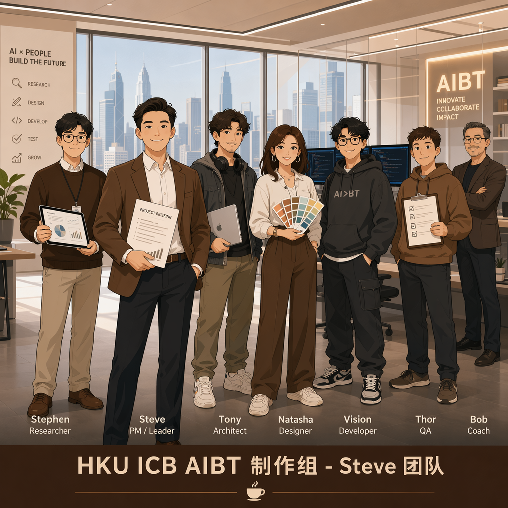

HKU ICB AIBT 制作组 - Steve 团队
「别人给你推荐咖啡，我们读懂你为什么喜欢。」
AI 个性化咖啡订阅 · 创新过程展示
← → 键或滑动切换 · 按 F 全屏
我们在小红书、抖音等平台收集了大量用户对咖啡订阅的真实反馈：
对 3 位目标用户进行深度访谈（25-35岁都市白领）：
一句话定义核心 Job：
| Functional | 定期收到好喝的、适合我口味的咖啡，不用自己花时间选。 → 基础（必要条件，非差异化） |
| Emotional | 感觉自己被理解、被 care。每天有一个「为自己」的小仪式。核心差异化 → 「我被精准理解」的感觉，竞品难以复制 |
| Social | 能跟别人说「我的咖啡是 AI 根据我的口味定制的」——有谈资，有身份标签。 → 加分项，驱动分享裂变 |
关键洞察：咖啡对这个群体意味着微型自主权、身份叙事和可控的小确幸。AI 的角色是放大用户的自主感——「你选得好，我帮你选得更好」。
几十个品牌/SKU，无法匹配个体偏好。
现有订阅缺乏反馈闭环，推荐与偏好脱节。
咖啡沦为功能性提神，失去「为自己选」的感觉。
对「AI」标签存在噱头感的戒心。
选择洞察 #2 → HMW：如何让用户的每一次口味反馈都「看得见」地改善下一次推荐？
三个概念方案 → 选择「咖啡 Spotify」模式：
| 维度 | A·味觉日记 | B·盲盒进化 | C·咖啡Spotify |
|---|---|---|---|
| 需求匹配 | ★★★★ | ★★★ | ★★★★★ |
| 技术可行 | ★★★★ | ★★★ | ★★★★ |
| 差异化 | ★★★ | ★★★★ | ★★★★★ |
| 社交传播 | ★★★ | ★★ | ★★★★★ |
| 商业扩展 | ★★★★ | ★★ | ★★★★★ |
| 总分 | 18 | 14 | 24 🏆 |
决策依据：用户已有「Spotify 推荐」的心智模型；80/20 结构解决怕踩雷问题；味觉人格报告驱动社交分享。
完整用户旅程：从发现到忠诚
⚠️ 关键修正：反馈环节在服务循环中，不在 Landing Page 上。用户还没喝到咖啡时没有东西可反馈。
DDI ≠ UI 动效。DDI = 用户发现「AI 真的在学习我」的具象瞬间
原则：DDI 必须建立在真实体验之上。Landing Page 上只有「预期 DDI」——真正的循环从第一盒开始。
一个使命：让用户完成 quiz 并订阅第一盒
目标用户愿意为"越喝越懂我"的AI咖啡订阅付溢价；可见的反馈闭环是续订核心驱动力。
上线 Landing Page + 味觉问卷，小红书种草引流，追踪转化漏斗。
问卷转化率 >30%
完成率 >70%
价格页CTR >15%
留资率 >10%
（待实验完成后填写）
用户是否理解 AI 个性化的价值？价格敏感度在哪个区间？
验证通过 → 开发推荐引擎 + 供应链
未通过 → pivot 到人工策展+AI辅助
Agent Product Team — 全 AI Agent 协作团队
PM / Orchestrator
产品策略 · 项目协调 · 决策推进
Researcher
市场研究 · 用户访谈 · 洞察提炼
Architect
系统设计 · 技术选型 · 架构决策
Designer
品牌设计 · 交互体验 · 视觉系统
Engineer
前端开发 · 原型实现 · 部署上线

「别人给你推荐咖啡，
我们读懂你为什么喜欢。」
不是替你选择，是让你的每一次选择都被记住。
感谢观看 🙏
HKU ICB AIBT 制作组 - Steve 团队 · 2026